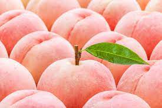

맛있고 건강한 복숭아
복숭아는 주로 날로 먹으며, 통조림, 주스, 잼으로 또는 홍차와 섞어서 먹기도 하며 요구르트를 만들 때에도 주 재료로 들어가기도 한다. 스무디 등의 음료에도 쓰이기도 한다.
인기는 말랑한 것이 훨씬 좋은 편(말랑한 복숭아)이나 씹는 맛을 즐기거나 하는 사람은 당도와 수분이 낮은 단단한 것(딱딱한 복숭아)도 좋아하는 경우도 보이며 전자를 물복 후자를 딱복이라 부르며 한창 제철일 때가 되면 인터넷 커뮤니티에서는 물복 vs 딱복 으로 탕수육의 부먹 vs 찍먹급의 논쟁거리가 되곤 한다.
당도와 수분이 바나나 못지않기 때문에 가게에서 파는 천원짜리 복숭아 2~3개만 먹어도 끼니가 해결된다고 한다. 즉, 바나나처럼 먹으면 포만감이 느껴진다.
복숭아는 부드럽고 달콤하면서도 상큼한 향기를 가지고 있다. 또 체내에 흡수가 빠른 각종 당류 및 비타민과 무기질 등이 풍부하다. 팩틴성분이 있어서 장에 좋아서 변비에도 도움이 되며 피부에도 좋다.
또한 혈액순환을 도와 심장병이나 관상동맥경화 같은 혈관질환을 예방해주며 혈압을 낮춰주는 칼륨이 체내 나트륨 배출을 조절해 고혈압을 예방하는데 도움을 준다고 한다.
